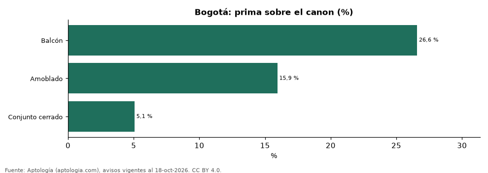

Cuánto suben el arriendo el amoblado, las mascotas, el balcón, el conjunto y el parqueadero en Bogotá (octubre 2026)
Estudio con datos abiertos (CC BY 4.0). Versión original: https://github.com/elbroker/aptologia-datos/tree/main/estudios/primas-de-amenidades-arriendo-bogota-2026 · DOI: 10.5281/zenodo.23512051
En Bogotá, la característica que más sube el arriendo frente a apartamentos comparables del mismo barrio, habitaciones y tamaño es «balcón»: +26,6 % en el canon. La que menos pesa es «conjunto cerrado» (+5,1 %).
Resumen: comparamos 13.214 apartamentos en arriendo en Bogotá con y sin cada característica dentro de celdas de mismo barrio, número de habitaciones y rango de área.
Actualizado: 18 de octubre de 2026 (datos del 18 de octubre de 2026) · Próxima actualización: mensual.

Resumen
| Indicador | Valor |
|---|---|
| Balcón | +26,6 % |
| Amoblado | +15,9 % |
| Conjunto cerrado | +5,1 % |
Prima de cada característica sobre el canon
| Característica | Diferencia en el canon | Celdas comparadas | Avisos con / sin | % de la oferta que la tiene |
|---|---|---|---|---|
| Balcón | +26,6 % | 8 | 509 / 375 | 49,3 % |
| Amoblado | +15,9 % | 3 | 137 / 199 | 17,0 % |
| Conjunto cerrado | +5,1 % | 12 | 509 / 640 | 37,8 % |
Diferencia ponderada entre la mediana del canon con y sin la característica en celdas comparables (30 avisos o más de cada lado).
Preguntas frecuentes
¿Cuánto más cuesta un apartamento amoblado en Bogotá? +15,9 % en el canon frente a apartamentos comparables sin amoblar.
¿Cuánto vale el parqueadero en el arriendo en Bogotá? No hay celdas suficientes.
Metodología
- Fuente: exportes nocturnos de la base de datos de Aptología (aptologia.com) del 18 de octubre de 2026: avisos vigentes de vivienda en portales inmobiliarios de 13 países, recogidos por Aptología y vistos en línea entre el 11 y el 18 de octubre de 2026. Corte: 18 de octubre de 2026.
- Depuración: se eliminan duplicados exactos (misma ciudad, zona, tipo, precio, moneda, área, habitaciones y baños) y los precios fuera del percentil 1–99 de cada país, operación, moneda y tipo; el precio por m² usa solo avisos con área declarada entre 12 y 2.000 m² y también se recorta al P1–P99.
- Qué se mide: precios pedidos (publicados), no precios de cierre. En arriendo, el canon mensual sin administración, gastos comunes ni condominio.
- Muestra mínima: cada cifra publicada se apoya en al menos 30 avisos; las celdas con menos se omiten.
- Colombia: Precios en pesos colombianos, sin conversión de moneda.
- Comparación emparejada: dentro de cada celda de barrio × habitaciones × rango de área se comparan las medianas del canon con y sin la característica; solo celdas con 30 avisos o más de cada lado; el promedio se pondera por los avisos con la característica. Para no confundir el efecto con el tamaño, las celdas también se separan por rango de área declarada (<50, 50–70, 70–90, 90–120, 120–160 y más de 160 m²); solo entran avisos con área.
- Limitaciones: la cobertura depende de los portales que recorre Aptología en cada país y es mayor en las ciudades grandes y en los segmentos medio-alto y alto; el área es la que declara el aviso, sin verificar; los nombres de zona vienen de los portales.
- Privacidad: solo se publican agregados; no se publica ningún dato personal, enlace a avisos ni nombre de anunciante.
- Datos abiertos: datos.csv, licencia CC BY 4.0.
Cómo citar
Pinzón Pineda, D. M. (2026). Cuánto suben el arriendo el amoblado, las mascotas, el balcón, el conjunto y el parqueadero en Bogotá (octubre 2026). Aptología (aptologia.com). https://github.com/elbroker/aptologia-datos/tree/main/estudios/primas-de-amenidades-arriendo-bogota-2026. Datos: datos.csv, licencia CC BY 4.0.